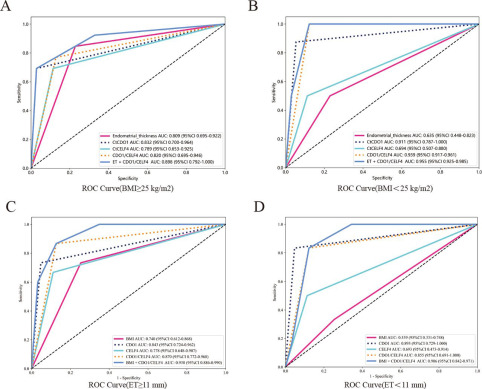

1Background & Objective
- Problem: AUB is common but few have EC; TVS & CA125 limited; invasive hysteroscopy over-used.
- Objective: validate CDO1m/CELF4m screening in premenopausal AUB, alone & combined with BMI/ET.
2Study Design & Cohort
296
premenopausal AUB
2021.11–22.10
enrollment
hysteroscopy
gold standard
- Setting: Third Xiangya Hospital OB/GYN; consecutive premenopausal AUB.
- Assays: ThinPrep cervical cells → CDO1m/CELF4m; TVS ET; serum CA125.
- Readout: CDO1m ΔCt ≤8.4 · CELF4m ΔCt ≤8.8 · dual = either positive.
- Analysis: univariate logistic (OR) · ROC/AUC · subgroup by BMI & ET.
- Cut-offs: BMI ≥25 · ET ≥11 mm (premenopausal proliferative phase).
64.49
CDO1m OR (20.5–203.3)
42.53
dual OR (11.9–152.0)
12.79
CELF4m OR (4.9–33.3)
Se 85.7%
dual · sensitivity
Sp 87.6%
dual · specificity
AUC 0.955
best combo
- AUB spectrum: menorrhagia · cycle irregularity · intermenstrual spotting.
- Outcome: EC confirmed by hysteroscopic histology in this cohort.
- Why premenopausal AUB: younger EC is rising; TVS thresholds controversial in this group.
- CA125: classic marker but low accuracy — included for comparison.
- Reuse: ThinPrep sample also serves cytology — no extra collection.
- Protection: fewer unnecessary hysteroscopies preserves fertility & reduces burden.
- Best model: BMI <25 + ET + dual methylation AUC 0.955 — near-perfect screening.
- Independent value: each methylation marker significant even after BMI/ET adjustment.
Methylation outperformed other non-invasive indicators in this premenopausal AUB cohort; combining with BMI or ET further improves screening.
3Risk Factors — OR Comparison
- Methylation dominates: CDO1m OR 64.49 (20.46–203.33) — far above ET/BMI.
4ROC & Dual-Gene Performance

Fig. ROC — ET, single/dual methylation & combined models for EC screening.
85.7%
Se · dual
87.6%
Sp · dual
- Best balance: dual-gene methylation highest Se/Sp among single tests.
- Combination: dual + BMI or ET lifts screening efficiency further.
5Subgroup Combined AUC
0.955
BMI <25 · ET+dual
0.898
BMI ≥25 · ET+dual
0.938
ET ≥11 · BMI+dual
0.906
ET <11 · BMI+dual
- Consistently high: combined models reach AUC 0.90–0.96 in every subgroup.
- Practical: methylation + TVS/BMI is a simple clinic-based screening step.